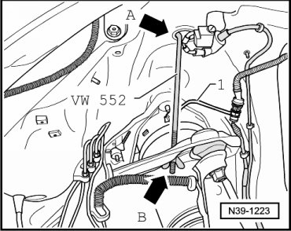
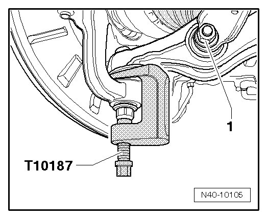
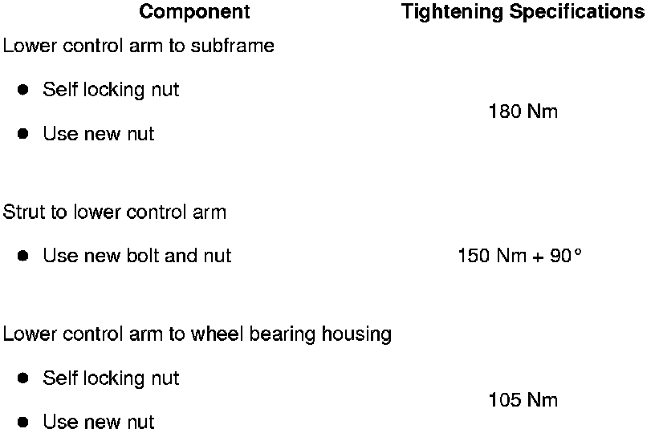

Removal and Replacement
Lower Control Arm
Special tools, testers and auxiliary items required
• Torque wrench (VAG 1332)
• Engine and transmission jack (VAG 1383 A)
• Socket (T10188)
• Mount (T10149)
• Tensioning strap (T10038)
• Tensioner hooks (VW 552)
• Ball joint puller (T10187)
Removing
CAUTION!
Before starting work, stabilizer bars must be coupled in vehicles with separable stabilizer bars. Otherwise, there is the danger of injury caused by unintentional separation.
- Remove wheel.
- Remove wheel housing liner.
- Hook in tensioner hooks (VW 552) in upper opening of wheel housing - arrow A - and in upper control arm - arrow B -.

- Lightly pre-tension control arm to prevent damage to ball stud caused by ball joint.
- Remove strut nut - 1 - from lower control arm.

- Loosen nut on lower control arm and press off ball stud using ball joint puller (T10187).
- Remove nut.
- Remove lower control arm from subframe and remove from wheel bearing housing.
Installing
Installation is performed in the reverse order of removal.
Threaded connection of strut/lower control arm must be tightened in curb weight position. Refer to --> [ Lifting Wheel Bearing to Curb Weight Position ] Front Suspension (AWD).
- Install wheel and tire. Refer to --> [ Wheel Bolts, Tightening Specification ] .
- Tighten threaded connection for lower control arm/subframe only during vehicle alignment.
- Perform vehicle alignment. Refer to --> [ Wheel Alignment ] Wheel Alignment.
Tightening Specifications
